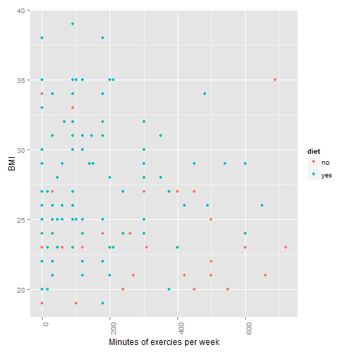

Coursera Course Project
Author DSG.
The reason why I chose to implement a Body Mass Indicator is because I think it is an important parameter for a human being, specially in today's world, where general diets are not as healthy as it should be. Besides that, during the process of evaluation of this project, why not to check your BMI?
The BMI is a value derived from the mass (weight) and height of an individual. The BMI is defined as the body mass divided by the square of the body height (weight/height2) and is universally expressed in units of kg/m2.
If the BMI value is lower than 18.5 the conclusion will be that the value is Low, if it is between 18.51 and 24.99 the conclusion will be that the value is Normal and if it is 25 or higher the conclusion will be that the value is Overweight
BMI US Study

Previous plot represents information about people in the US regarding to their BMI. The study is about their final BMI depending on whether they exercise and diet.
The result is that to have a healthy BMI it is more important to do exercise than diet.